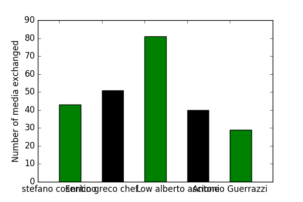
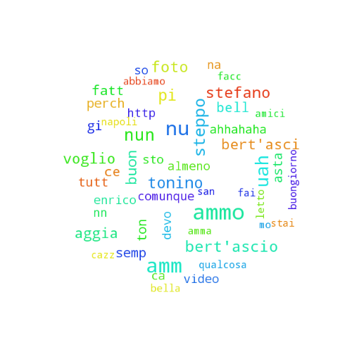
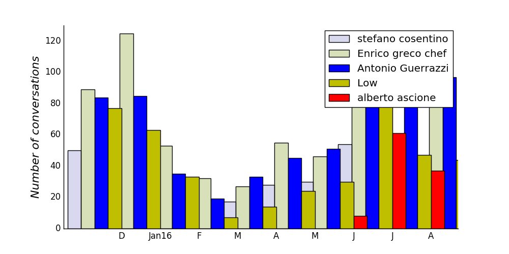
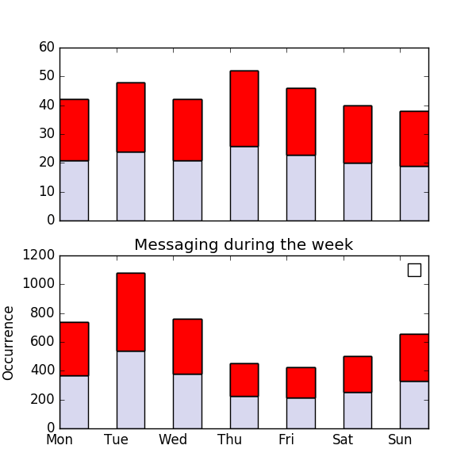
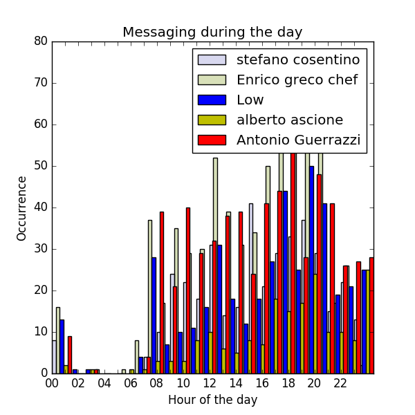
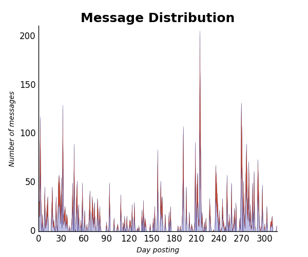

The median reaction time for stefano cosentino is 8.5 minutes
The median reaction time for Enrico greco chef is 8.0 minutes
The median reaction time for Antonio Guerrazzi is 14.5 minutes
The median reaction time for Low is 9.0 minutes
The median reaction time for alberto ascione is 23.0 minutes
stefano cosentino started a conversation 17 % of the times.
Enrico greco chef started a conversation 34 % of the times.
Antonio Guerrazzi started a conversation 31 % of the times.
Low started a conversation 12 % of the times.
alberto ascione started a conversation 6 % of the times.
stefano cosentino sent 388 messages and 43 photos/videos.
Enrico greco chef sent 681 messages and 51 photos/videos.
Antonio Guerrazzi sent 629 messages and 29 photos/videos.
Low sent 422 messages and 81 photos/videos.
alberto ascione sent 185 messages and 40 photos/videos.

stefano cosentino:

Enrico greco chef:

Antonio Guerrazzi:

Low: 
alberto ascione:

stefano cosentino jinxed first 0 times
Enrico greco chef jinxed first 0 times
Antonio Guerrazzi jinxed first 0 times
Low jinxed first 0 times
alberto ascione jinxed first 0 times
stefano cosentino used the word 'love' 0 times, and said 'I love you' 0 times, but also 'I hate you' 0 times.
Enrico greco chef used the word 'love' 0 times, and said 'I love you' 0 times, but also 'I hate you' 0 times.
Antonio Guerrazzi used the word 'love' 3 times, and said 'I love you' 0 times, but also 'I hate you' 0 times.
Low used the word 'love' 0 times, and said 'I love you' 0 times, but also 'I hate you' 0 times.
alberto ascione used the word 'love' 0 times, and said 'I love you' 0 times, but also 'I hate you' 0 times.

And to be precise:
stefano cosentino stretched words 0.0 % of the times with things like:
" ceeeeeerto, fooooo, piiiiiisc, alloraaaaaaaa, prooooo ".
Enrico greco chef stretched words 0.0 % of the times with things like:
" oooo, 10000, com/1669567666654452/videos/1742699322674619/, ooooooooooooooooooooooo, oooooo ".
Antonio Guerrazzi stretched words 0.01 % of the times with things like:
" oleeee, ooook, eeeee, eeeeeeeh, ueeee ".
Low stretched words 0.01 % of the times with things like:
" ammoooo, uagliuuuuu, uahhhhh, gennyyyyyyyy, oreeeee ".
alberto ascione stretched words 0.0 % of the times with things like:
" ***** ".


